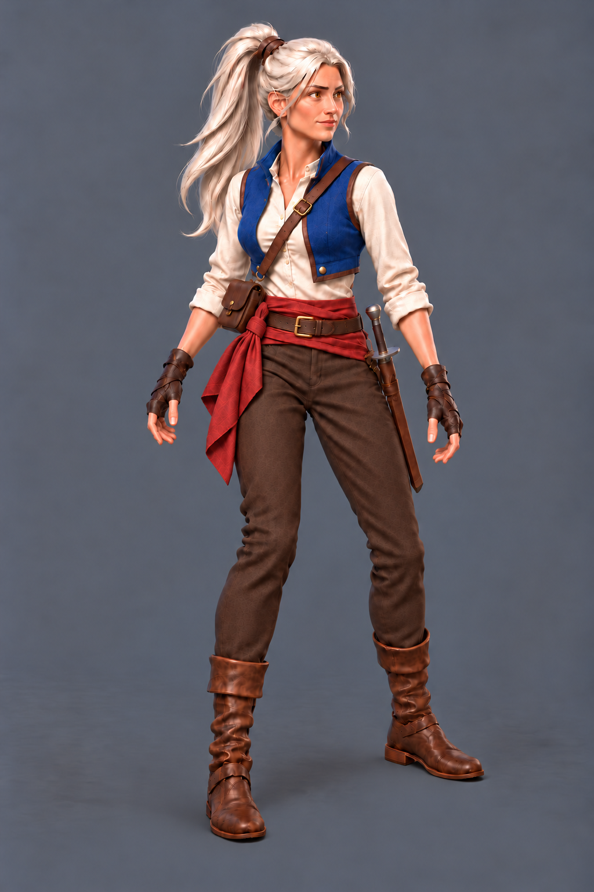
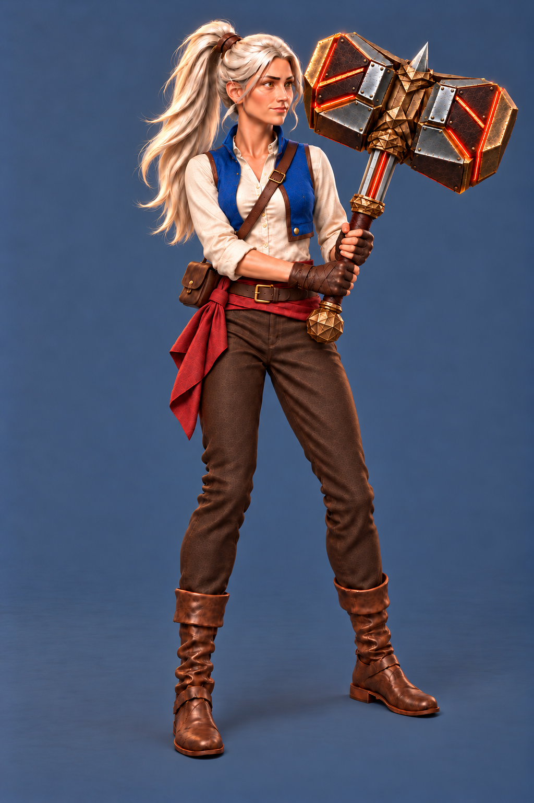

Laema: which tool produces better art?
Two shared briefs, the same original-character references, and the first completed result from each tool. Compare the finish, Laema’s identity, anatomy and equipment. These are new illustrations for review.
Visual review pending · no production replacement
Both raw canvases are 1024×1536. Equal whole-canvas display scaling only; no character resizing, cropping, anatomy repair or color correction. Click an image to inspect its original file. Small previews test reduced-image readability, not verified gameplay scale.

Reference 1 · Laema Open: identity and costume. One approved alternative; final outfit remains open.

Reference 2 · Saved hammer concept: equipment and materials. Final production weapon remains open.
What to look at
Start with the image you prefer overall. Then inspect the face, fingers and grip, clothing construction, and hammer shape. Switch to the action pose to see whether the character stays recognizable while the pose changes.
Both methods received these exact PNGs in this order and the same submitted text. Neither received the other method’s output.
Character comparison sheet ·
Action comparison sheet
Shared brief for this comparison
Method, timing and comparison limits
Local: the already installed Qwen Image Edit 2511 FP8 mixed checkpoint, FP8 encoder and Qwen VAE, ComfyUI, RTX4090;40 steps, seed42, CFG4, Euler/simple, full-strength fresh latent, reference conditioning. No ControlNet or corrective mask.
Built-in: image_gen with the same references and positive prompt. Its exact backend model revision, seed, sampler and internal preprocessing are not exposed. The delivered canvas matched the requested dimensions.
Local times include request execution, model loading where needed, polling and file save. Built-in times are observed tool-call wall time; its queue, compute and transfer are not separately exposed. These are practical observed durations, not controlled hardware speed measurements. Installation and comparison preparation are excluded. Manual painting/repair performed:0seconds for every result. Time to an accepted asset remains unknown.
This two-task, first-result comparison does not rank every local model or establish either method’s best possible result. The references are earlier AI-generated concepts, which may favor familiar styles. Human preference and production acceptance remain separate.
Reproduction notes · Executed results · Predeclared plan · Raw file recordsOptional review notes
Choose A, B, a tie or neither. Notes stay in this browser; “Download notes” saves a JSON file for you. This page does not submit feedback automatically.
Source concepts are preserved unchanged. No outfit/weapon selection, animation, game integration, accepted art method or production readiness is implied by these trials.